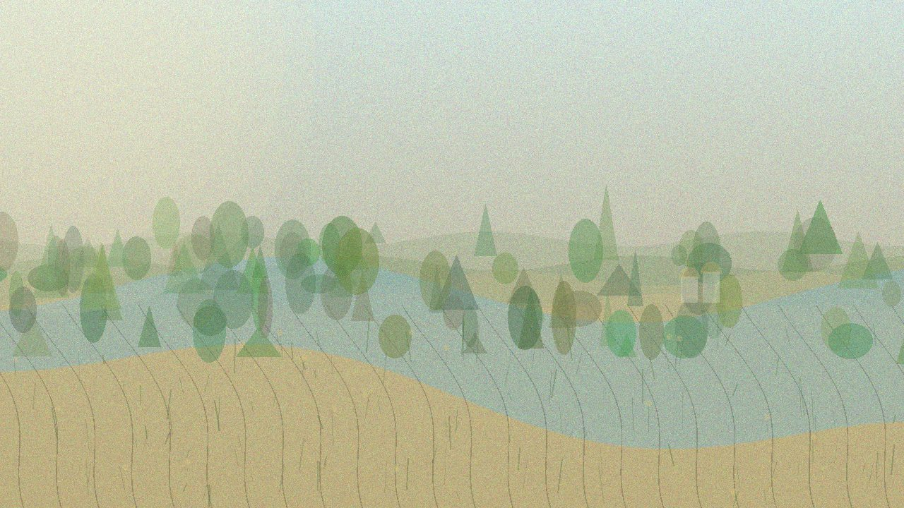

Главная / Калужская область

Калужская область
Что посадить
Что посадить
в Калужской области
Выберите северо-восток и Оку, центральную калужскую полосу или южные леса и Угру — условия отличаются влажностью, почвами и прогревом.
Дачная зона с переменными почвами и микроклиматами: надёжны овощи короткого сезона, ягоды и зимостойкий сад.
Открыть страницу зоны → Центральная калужская зонаУниверсальная зона для огорода и сада, где важно выбирать солнечные участки и улучшать тяжёлые почвы органикой.
Открыть страницу зоны → Южные леса и УграЛесистая и местами влажная зона: сильны картофель, капустные, смородина и зимостойкие плодовые на сухих местах.
Открыть страницу зоны →